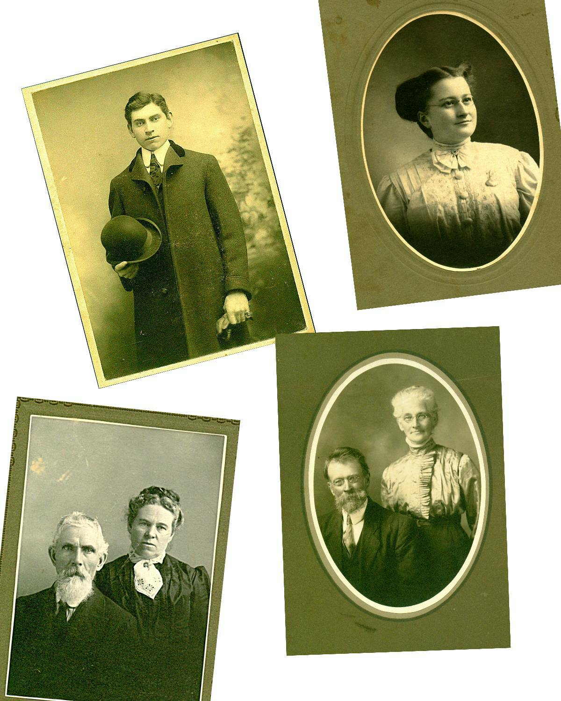

The Family Chronicle
No.57 January 10, 2004
________________

Top left: My father, Elmer Alton Glendenning
Top right: My mother, Jane Elizabeth Jardine (Watling) Glendenning
Bottom left: Grandparents, Walter and Elizabeth (Peters) Glendenning
Bottom right: Grandparents, Jubal and Grace (MacDonald) Watling
One winter a mud digger was set up on the ice behind our barn on the far side of the channel. As I recall, it had a wooden frame about 12 to 15 feet square and a huge shovel or scoop, which was lowered, through the ice to the river bottom. A mud digger was powered by a horse or horses and with the aid of pulleys raised scoops of mud and deposited them in sleds. The mud was hauled to farmland which had been plowed earlier in the year and spread. Mussel mud was rich in nutrients including lime from the mussel shells. A load of mussel mud was very heavy.
One summer we built a raft at our shore and then poled it out into the river to be used as a diving platform. I recall anchoring it over the place where the mud had been dug then jumping off and trying to reach bottom. I didn’t (yet); others may have. Recently Cameron MacDonald reminded me that we (presumably some of the other boys, not me) pushed him off the raft into deep water and he couldn’t swim.
Mentioning the shortening pail reminded Donald Edge of carrying limejuice to his grandfather, John W. MacNaughton, on hot summer days. He mentioned Rose’s lime juice; we used Montserrat.
Limejuice was a common drink when making hay. Like Donald, my role was to carry limejuice to my brothers. Limejuice and sugar were mixed in cold water. It provided a cold drink – at least as cold as the water pumped from a well. (We, in Little Branch, did not have the luxury of electricity at that time.) Limejuice was refreshing – I must try it again some again some hot day.
We purchased our limejuice at Adams’ store, directly across the river from us. The story is told, I may even be repeating myself, of someone going to the store and asking Mr. Adams if he had any limejuice. He is reported to have answered, “Well, I have some of that Muskrat juice ( Montserrat Juice).” From then on, limejuice at our house was known as muskrat juice.
Robert Standfield
I was saddened by the recent death of Robert Standfield . He was from a prominent family, the makers of Standfield’s underwear, former Premier of Nova Scotia, former leader of the federal Progressive Conservative Party and, in the words of some, the best Prime Minister Canada never had.” He was personally much respected and much loved.
A number of years ago, probably about 1990, I attended a meeting in Kingston, Ontario. I flew to Montreal and rented a car to take me to Kingston. At the close of the meeting, I was asked if Mr. Standfield could a company me back to the Montreal airport. I said yes; I was delighted. He had retired from active politics by then.
On a fine summer’s day, we spent two leisurely hours together. He was both a good conversationalist and a good listener. We talked about life in politics, education (he was a former Minister of Education in Nova Scotia, and just general conversation. I will always treasure those two hours.
The Chronicle is an occasional newsletter published by Don Glendenning It is designed to share information about my family, community and the times in which I grew up. While every effort is made to be accurate, errors are likely to occur. Comments, enquiries and information may be sent to 62 Queen Elizabeth Drive, Charlottetown, PEI, C1A 3A9. Tel: 902-892-5859 Email: dglende @attglobal.net. Feel free to make and pass along copies of this newsletter.